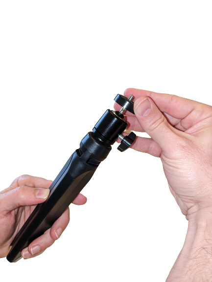
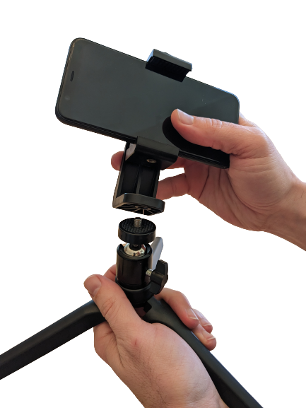
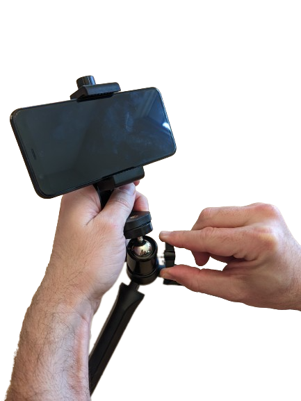
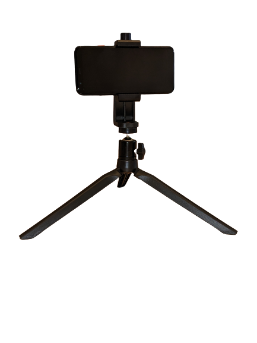

Attach a phone directly to the desktop tripod
How to use a phone with desktop tripod without attaching the ring ligh.
The desktop tripod can be used with the phone holder directly, without attaching the ring light. This bonus functionality could come in handy if you want to use the ring light with the floor stand but set up your phone somewhere else.
-
Attach the ball head.
Align the ball head on the screw at the top of the desktop tripod, and twist until it becomes tight.
 -
Attach the expandable phone holder to the ball head.
Align the phone holder with the screw pad on top of the tripod and twist until secure.
 -
Adjust the ring light using the ball head.
Twist the screw on the side of the ball head to rotate and tilt the phone holder. Tighten the screw once the phone holder is in the desired position.
 -
Phone only with tripod setup is complete.
